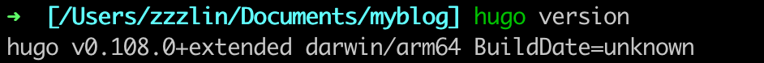
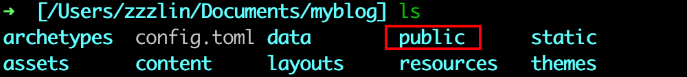
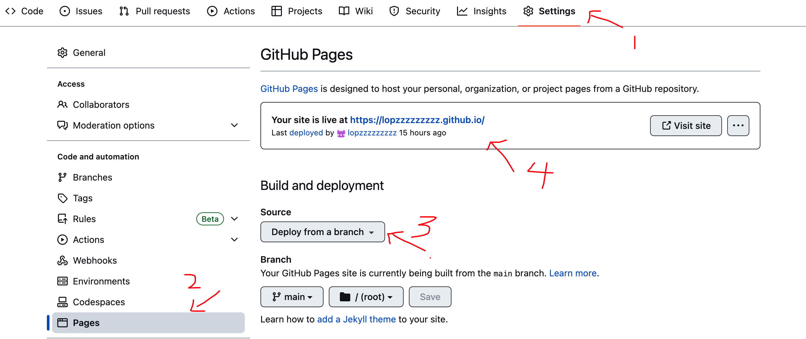

安装Hugo#
我使用的是macos系统，用homebrew进行安装，也可以去github上安装。
安装完后在终端输入查看版本确认是否安装成功。
我的显示如下：

安装完后找一个你博客想存放的目录，就可以建站了。
导入主题，hugo有很多主题，挑选一个你喜欢的，在文件内git下来就可以了，这里我使用的PaperMod
1
2
|
cd myblog #先进入文件内
git clone https://github.com/adityatelange/hugo-PaperMod themes/PaperMod --depth=1 #导入主题
|
在myblog内找到config.toml配置文件，打开来，加上theme = “PaperMod”，打开终端
1
2
3
4
5
6
7
8
9
10
11
12
13
14
15
16
17
18
19
20
21
22
23
24
25
26
27
|
#输入：
hugo server
#输出：
Start building sites …
hugo v0.108.0+extended darwin/arm64 BuildDate=unknown
| EN
-------------------+-----
Pages | 26
Paginator pages | 0
Non-page files | 0
Static files | 6
Processed images | 0
Aliases | 5
Sitemaps | 1
Cleaned | 0
Built in 48 ms
Watching for changes in /Users/zzzlin/Documents/myblog/{archetypes,assets,content,data,layouts,static,themes}
Watching for config changes in /Users/zzzlin/Documents/myblog/config.toml
Environment: "development"
Serving pages from memory
Running in Fast Render Mode. For full rebuilds on change: hugo server --disableFastRender
Web Server is available at http://localhost:1313/ (bind address 127.0.0.1)
Press Ctrl+C to stop
|
输入完，在浏览器输入 http://localhost:1313/ 便可以进入博客，目前并没有创建什么笔记，所以里面内容都是为空的。
部署到github Pages#
在github创建仓库，仓库名字一定是 .github.io , 这里的填的是你github账号名字（包括括号），一定要对应的上，否则为出错。
创建完后，在myblog目录下，修改config.toml，将baseURL = “https://.github.io/"，这样后续的资源文章都会以这个路径寻找，保存完，终端输入hugo，执行完毕后，会生成public文件夹，里面的文件我们将部署到github。

1
2
3
4
5
6
|
cd public
git init
git remote add origin git@github.com:<>/<>.github.io.git #这里要换成你的仓库地址
git add .
git commit -m 'first commit'
git push
|
做完这些，public文件下的东西都会上传到仓库里，在仓库settings中找到pages，将source设置为 Deploy from a branch，不出意外，过一会就会自动部署上去了。
修改配置
修改config.toml配置，和创建文章的配置，推荐按[置顶] hugo博客搭建 | PaperMod主题进行配置。
创建笔记#
还是回到终端myblog路径下，输入hugo new ****.md, 创建名为****的markdown格式的笔记，所有的笔记都会在content目录下，根据你的需要在conteng下创建文件夹进行分类，比如我这里的是分类是技术、生活，就创建了content/post/tech/和content/post/life。
创建完后，在笔记最上方有进行配置的设置，draft: true # 是否为草稿，设置为true时，默认不会显示，可以输入hugo server -D便可在本地查看，写完后应改为false。
发布新写完的笔记#
当你想发布一篇新的笔记或修改了配置，同样的，在myblog目录下，输入hugo ，更新public文件夹
1
2
3
4
|
cd public
git add .
git commit -m '注释，如发布**笔记'
git push
|
push完后过一会就可以在github站点看到你的内容更新了。